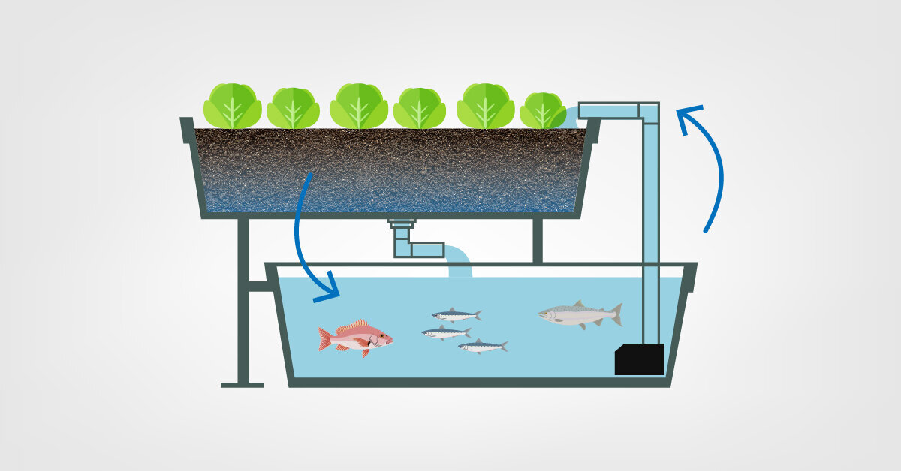

Aquaponia é um sistema integrado de produção de alimentos que combina a aquicultura (criação de peixes) com a hidroponia (cultivo de plantas em água). Neste sistema, os resíduos gerados pelos peixes, que normalmente seriam descartados como poluentes, são transformados em nutrientes para as plantas, promovendo um ciclo sustentável e eficiente.
O processo funciona da seguinte forma: a água do tanque onde os peixes são criados acumula resíduos ricos em amônia. Essa água é então bombeada para os leitos onde as plantas estão crescendo. Bactérias nitrificantes presentes no sistema convertem a amônia em nitritos e, posteriormente, em nitratos, que são absorvidos pelas plantas como nutrientes. A água, já filtrada e limpa pelas raízes das plantas, é devolvida ao tanque dos peixes, reiniciando o ciclo.

Um sistema de aquaponia é composto por diversos elementos essenciais que garantem seu funcionamento adequado. O tanque de peixes é onde os animais são criados, e a água acumulada ali contém resíduos que serão utilizados pelas plantas. O filtro biológico desempenha um papel fundamental ao converter essas impurezas em nutrientes. As plantas crescem nos leitos de cultivo, absorvendo os nutrientes e purificando a água antes que ela seja devolvida ao tanque. A circulação da água é mantida por uma bomba, que garante a renovação constante do ciclo, enquanto um sistema de aeração mantém o nível de oxigênio necessário para peixes e bactérias.
Os benefícios da aquaponia são muitos. A economia de água é uma das principais vantagens, já que o sistema é fechado e reutiliza a mesma água constantemente. Além disso, a produção simultânea de peixes e vegetais elimina a necessidade de fertilizantes químicos, tornando o processo mais natural e sustentável. Como as plantas absorvem os resíduos dos peixes, a qualidade da água é mantida em condições ideais, reduzindo a necessidade de tratamentos químicos. A aquaponia é uma solução viável tanto para pequenos produtores domésticos quanto para grandes operações comerciais, permitindo o cultivo de alimentos saudáveis em regiões onde a terra ou a água são escassas.
Esse método é considerado uma forma de agricultura sustentável, que pode ser implementada em diferentes escalas, desde pequenas unidades domésticas até grandes operações comerciais. É especialmente atraente em regiões onde a terra e a água são escassas, permitindo a produção eficiente de alimentos em espaços urbanos e áreas com condições agrícolas limitadas.
Siga-nos nas redes sociais